Anne L'Hôte
Artisane logiciel @ ministère de l'enseignement supérieur et de la recherche en France
05 septembre 2024
Open Science Days, Lausanne
Des outils et des données libres pour suivre, améliorer et évaluer la science ouverte
Exemples et atelier avec le baromètre de la science ouverte & le works-magnet


📋 Sommaire
- Baromètre de la science ouverte
- Works-magnet
- Atelier
🧭 Baromètre de la science ouverte
🧭 Baromètre de la science ouverte
📊 Résultat
🧭 Baromètre de la science ouverte
❓ Pourquoi
🇫🇷 En 2018, plan national pour la science ouverte
💯 Objectif de 100 % d'ouverture des publications scientifiques en 2030
💰 Commande publique du Baromètre de la science ouverte

🧭 Baromètre de la science ouverte
❓ Comment
👑 un outil souverain et évolutif pour évaluer les impacts de la politique
publique de la science ouverte
🔧 un outil stratégique pour affiner et ajuster les politiques publiques de la science ouverte
👩🔬 un levier pour améliorer la connaissance de la production scientifique française, au delà
des aspects de la science ouverte
🧭 Baromètre de la science ouverte
📋 Méthodologie
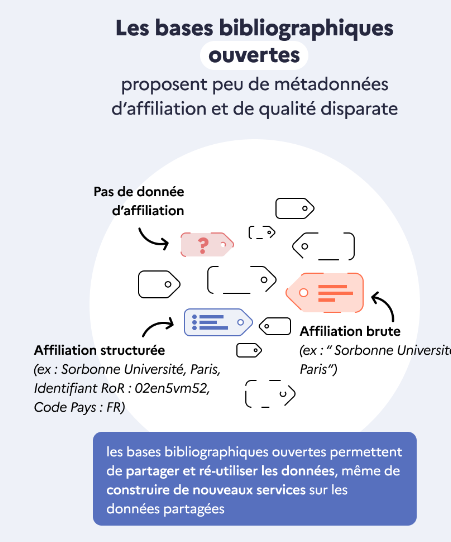
🧭 Baromètre de la science ouverte
📋 Méthodologie
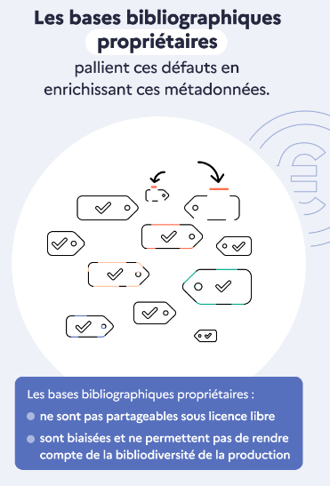
🧭 Baromètre de la science ouverte
📋 Méthodologie
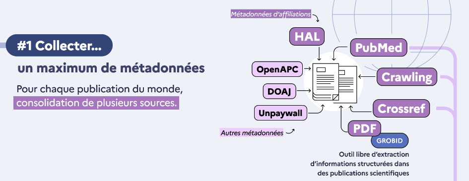
🧭 Baromètre de la science ouverte
📋 Méthodologie
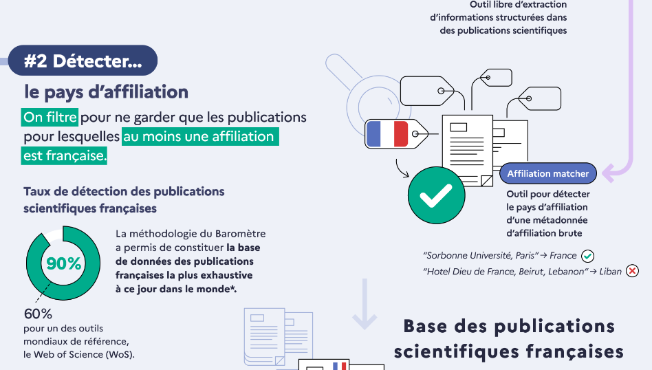
🧭 Baromètre de la science ouverte
📋 Méthodologie
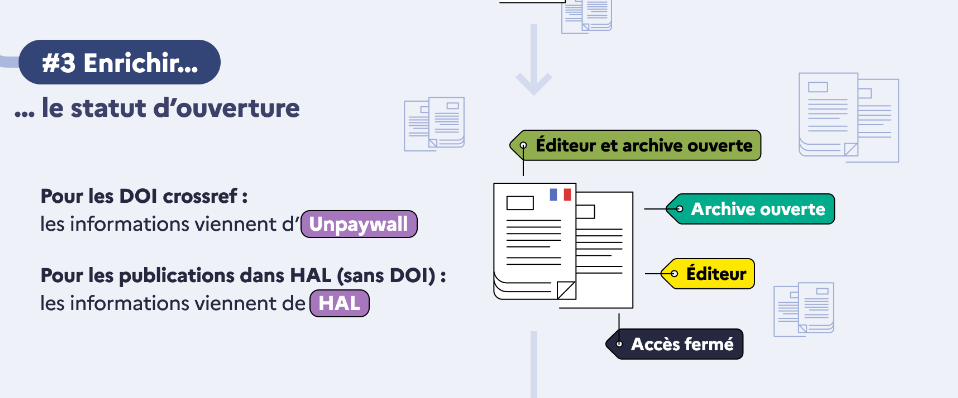
🧭 Baromètre de la science ouverte
📋 Méthodologie
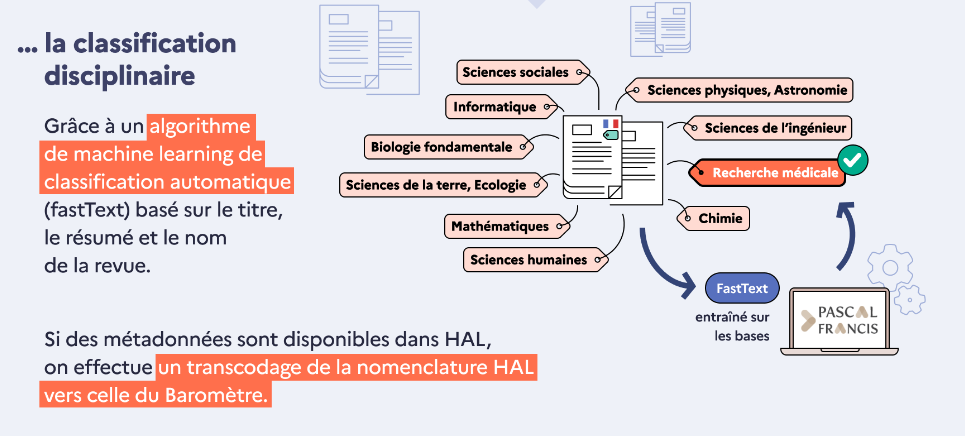
🧭 Baromètre de la science ouverte
📋 Méthodologie
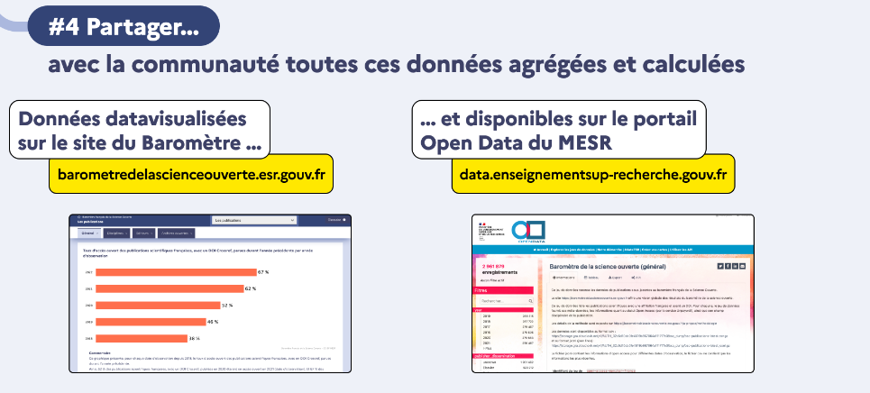
🧭 Baromètre de la science ouverte
📋 Méthodologie
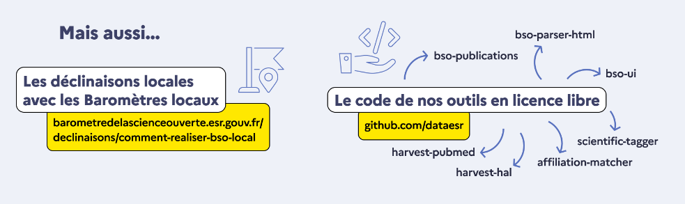
Comparaison avec des principales bases internationales
Lauranne Chaignon, Daniel Egret; Identifying scientific
publications countrywide and measuring their open access: The case of the French Open Science Barometer
(BSO).
Quantitative Science Studies 2022; 3 (1): 18–36. doi: https://doi.org/10.1162/qss_a_00179

- "The open-source strategy used by the BSO effectively identifies the vast majority of publications with a persistent identifier (DOI) for Open Science monitoring."
🧭 Baromètre de la science ouverte
📋 Baromètres locaux
🧭 Baromètre de la science ouverte
📋 Baromètres locaux
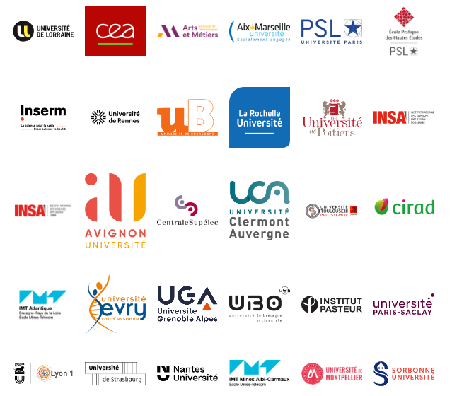
🧭 Baromètre de la science ouverte
📋 Baromètres locaux
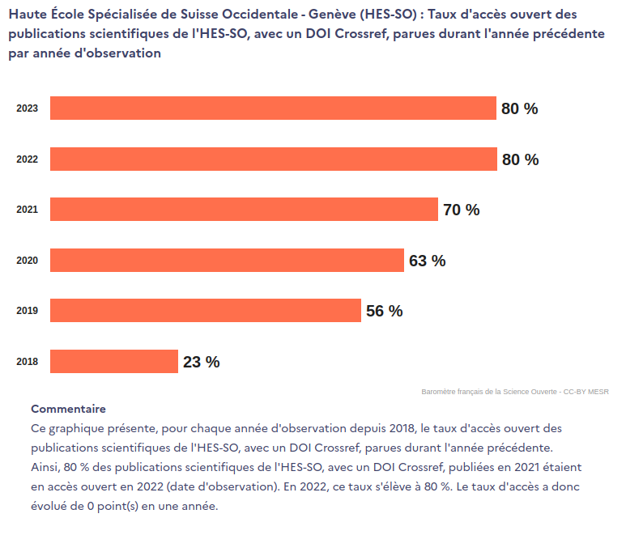
🧲 Works Magnet
Le Baromètre de la Science Ouverte, un outil évolutif
Depuis 2018, le baromètre de la science ouverte s'enrichit de nouveaux objets d'étude:
- 📄 2018 : Publications
- 🧪 2020 : Essais cliniques et études observationnnelles
- 🎓 2021 : Thèses de doctorat
- 🧑💻 2021 : Données de la recherche et code et logiciels

La définition du corpus de publications est automatique au niveau national, mais pas local
Au niveau national, le corpus est déterminé automatiquement à partir des affiliations brutes moissonnées /
scrapées
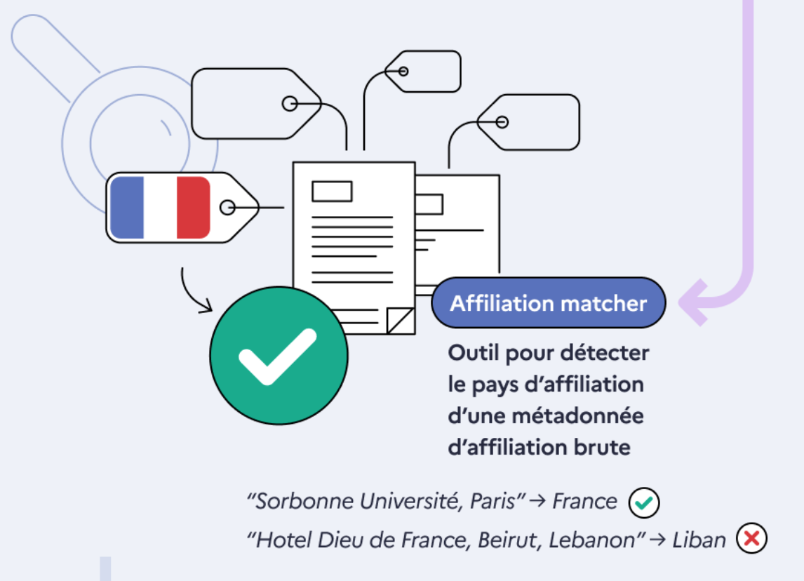
Mais au niveau institutionnel, le corpus reste à la main de chaque établissement
(plus de 200 déclinaisons locales à ce jour !)
(plus de 200 déclinaisons locales à ce jour !)
Un outil non propriétaire pour les données locales ?
L'université de Lorraine propose une
méthodologie
pour retrouver les publications de son institution / laboratoire
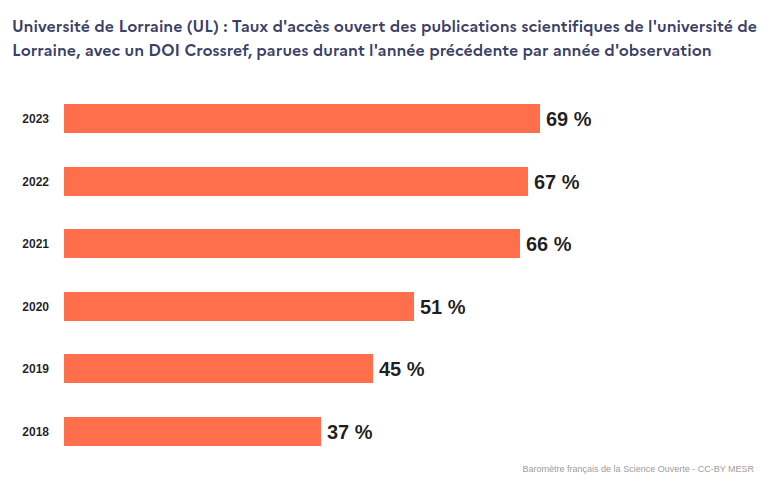
Un outil ne faisant pas appel aux bases propriétaires est-il envisageable ? OpenAlex peut aider mais les
alignements automatiques sur RoR sont largement perfectibles.
Au-delà des publications, les jeux de données
🚩 Dans les entrepôts des jeux de données, les métadonnées en général (les affiliations en particulier !)
sont peu ou pas renseignées
Pour les jeux de données, le Baromètre fournit aujourd'hui des indicateurs basés sur les publications, mais
des indicateurs "entrepôts-centriques" sont aussi nécessaires pour le pilotage
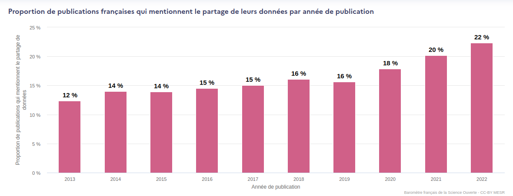
Comment aider les établissements à retrouver "leurs" jeux de données déposés dans des entrepôts ?
Trois cas d'usages
A partir d'une recherche sur les affiliations (RoR ou dans le texte des signatures), les différentes
signatures d'affiliations utilisées sont proposées à l'utilisateur, qui peut ensuite les valider ou les
exclure. A partir de là, trois cas d'usages principaux sont proposés :
- Corriger les RoR dans OpenAlex
- Etablir un corpus de publications
- Etablir un corpus de jeux de données
Sources mobilisées
On capitalise ici sur le travail précédemment réalisé dans le cadre du baromètre de la science ouverte
- OpenAlex
- Baromètre de la science ouverte
- Métadonnées scrapées à partir du web
- Crossref
- HAL
- Datacite
Des traitements spécifiques aux jeux de données sont réalisés : prise en compte du DOI "principal"
uniquement (et pas les DOI de chaque fichier du jeux de données), lien avec le DOI de publication,
heuristique basées sur les ORCID croisés avec OpenAlex ...
Fonctionnalités - Recherche
- Champ de recherche par affiliations
- Filtrage par année de publication
- Filtrage par type de production
Fonctionnalités - Recherche
Champ de recherche par affiliations

- Champ pouvant avoir plusieurs valeurs.
- Sont alors ramenées l'ensemble des productions mentionnant au moins l'une de ces affiliations.
- Peut être saisi: un nom (ex: Université de Lorraine ou loria) ...
- ... ou un RoR (ex: https://ror.org/04vfs2w97 ou 04vfs2w97).
Fonctionnalités - Recherche
Champ de recherche par affiliations
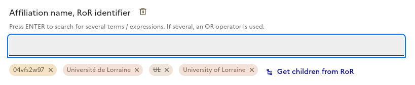
Pour chaque RoR saisi,
- Les différents noms et acronymes renseignés dans RoR pour cet identifiant sont automatiquement ajoutés à la recherche.
- Il est possible de retrouver les RoR "enfants" de cet identifiant, ainsi que leurs noms et acronymes pour les ajouter à la recherche.
Fonctionnalités - Recherche
Filtrage par année de publication
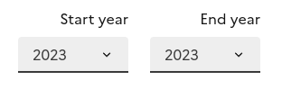
- Interval de publication des productions.
- Les années choisies sont incluses.
- Année minimale 2010, année maximale 2024.
- Par défaut, l'année sélectionnée est 2023 dans les 2 cas.
Fonctionnalités - Recherche
Filtrage par type de production

- Possibilité de rechercher des jeux de données seulement.
- Par défaut, la recherche est effectuée sur les publications et les jeux de données.
Fonctionnalités - Action
- 🏫 Améliorer la correspondance RoR dans OpenAlex
- 📑 Retrouver les publications affiliées à votre établissement
- 🗃 Retrouver les jeux de données affiliés à votre établissement
Fonctionnalités - Action
🏫 Améliorer la correspondance RoR dans OpenAlex
- On sait qu' OpenAlex n'est pas exempt d'erreurs
- Proposition d'une solution technique pour centraliser et uniformiser les demandes de correction
- Voici les corrections demandées jusqu'à présent
- Cas des homonymies (ex: essec)
- Possibilité de modifier, ajouter ou supprimer un RoR pour une affiliation donnée
Fonctionnalités - Action
📑 Retrouver les publications affiliées à votre établissement
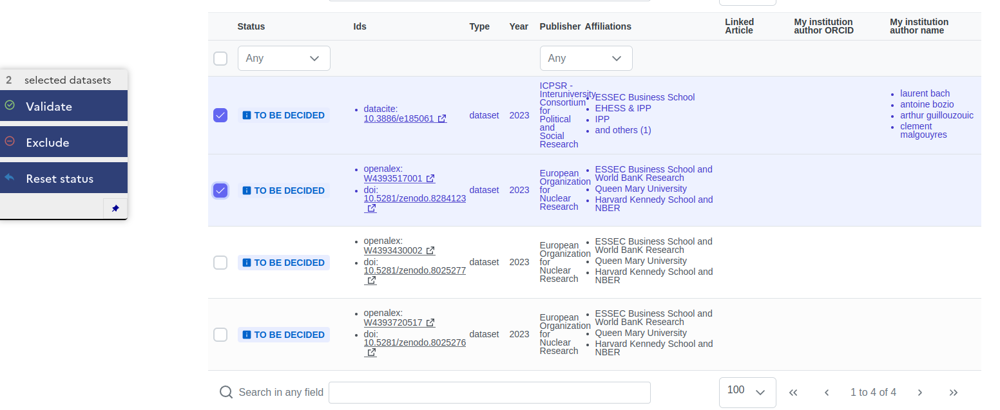
Fonctionnalités - Action
📑 Retrouver les publications affiliées à votre établissement
- Liste des affiliations distinctes rencontrées parmi les productions scientifiques
- Possibilité de rechercher parmi les affiliations
- Action requise de validation ou invalidation de chacune des affiliations trouvées
- Cela provoquera la validation des productions scientifiques se revendiquant de cette affiliation
Fonctionnalités - Action
📑 Retrouver les publications affiliées à votre établissement
Booster pour accelérer les validations massives:
- Valider les jeux de données sans affiliation mais liés à une publication rattachée à mon institution
- Valider les jeux de données sans affiliation mais dont au moins 3 auteurs sont détectés comme appartenant à mon institution
Fonctionnalités - Action
🗃 Retrouver les jeux de données affiliés à votre établissement
- Comme pour les publications, logique de validation ou invalidation des affiliations et donc des jeux de données
- Propostion d'indicateurs concernant les jeux de données validés : distribution du nombre de jeux de données pour chaque année de publication par éditeur, par type
🗨️ Echanges / Questions ?
📨 bso@recherche.gouv.fr
🦣 https://mas.to/@annelhote